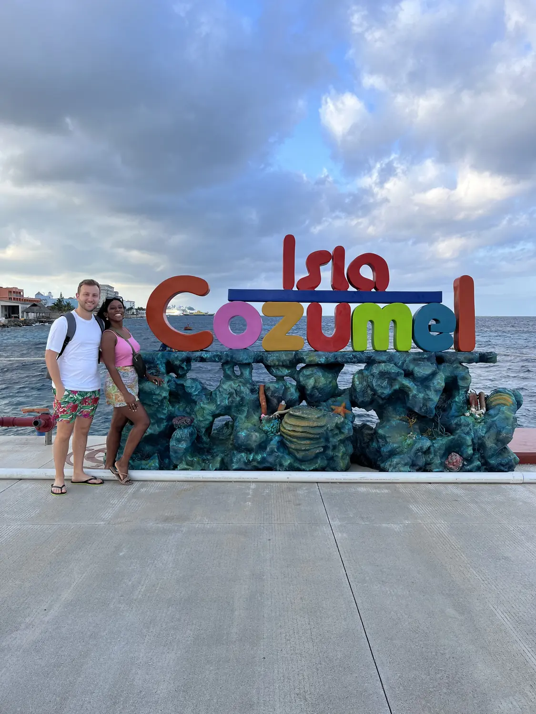

Cómo recorrer Cozumel01
Recorrer las playas de la isla en scooter
📍 Isla Cozumel
Esta fue nuestra forma favorita de conocer Cozumel: rentar un scooter fue barato y fácil, y pasamos el día dándole la vuelta a la isla, parando en cualquier playa o cala que se viera bien. La carretera principal bordea la costa todo el camino, así que nunca estás lejos del agua. Llena el tanque, ponte el casco y arranca: la libertad es lo que hace el día.
Renta un scooterDale la vuelta a la isla